Reshade Effect Shader Toggler (R.E.S.T)
Used to separate effects from the game and layer ReShade shader under the isolated element.

"How do we start?"
Welp, we are going to need to download the add-on first.
You can download it from here.
"What with the multi files in there? What's going on where am I? What year is it? Do I need all the bits?"
Wow... Hang on there. So the contents of the release folder should be a few shaders the FX files.
There s also a License and a README File inside that folder. Ignore them for now.
Yes, you do need all the bits. Well, You really only need one of the .addon#. But, you could drag them both in the same area where the ReShade.dll is.
But, for are case we are going to to focus on the 64 bit add-on.
"OK, Stop, I grabbed that ReshadeEffectShaderToggler.addon64 where do I put it again?"
You place this add-on where you installed ReShade too. So look for the game folder and look for dxgi.dll in this case.
Note: REST add-on can or may work for other api's. But, the support is spotty. So we are focusing on a simple game in the hopes that it will be more understandable.
"Wait, What game?"
So in this guide I am going to focus on a game called, Wiz⊙rdum.
But, you can use REST in a lot of different games in the image use for the post. That is DaggerFall Unity.
Your folder should look like this.

Record Scratch You must be wondering how you got here.
Well, I assumed that you already have the game installed. Also assumed that you installed ReShade already. This is why the image looks like this.
A Basic ReShade install guide will be added later and linked here.
"OK, my files look like this in the game what should I do now?"
Now, you should be able to start the game. ReShade should load and the add-on should be on the Add-on Tab.

Click the little arrow to open the a add-on. Also make sure to close the other add-ons to make it cleaner looking.
Ok now that you done that it should look like this:
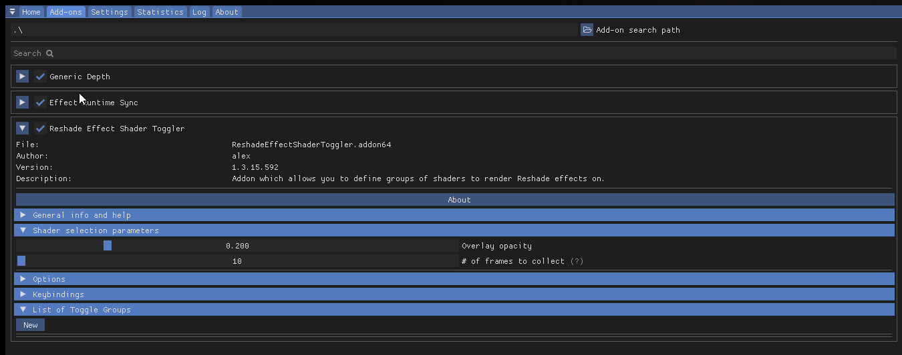
Ok close the ReShade menu and go in to the game. So we can use the add-on when we find in game UI.
The start of the game should be enough.
"Now what? I am at the start of the game and I have control what do I do now?"
Open up, ReShade and move it to the right and it should look like this:
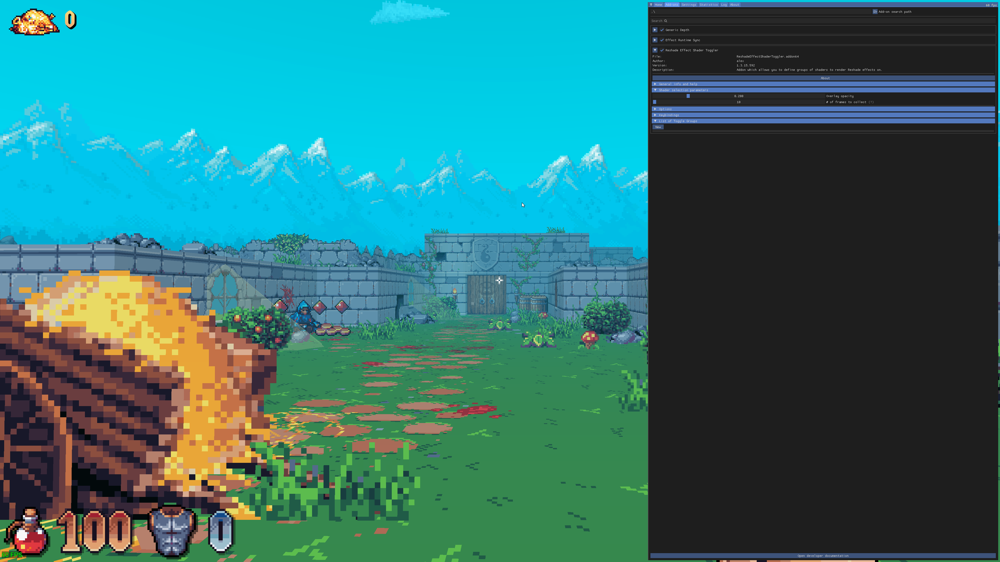
I am going to incease the ReShade Text size to make it easier to read.
Now you should click on New.
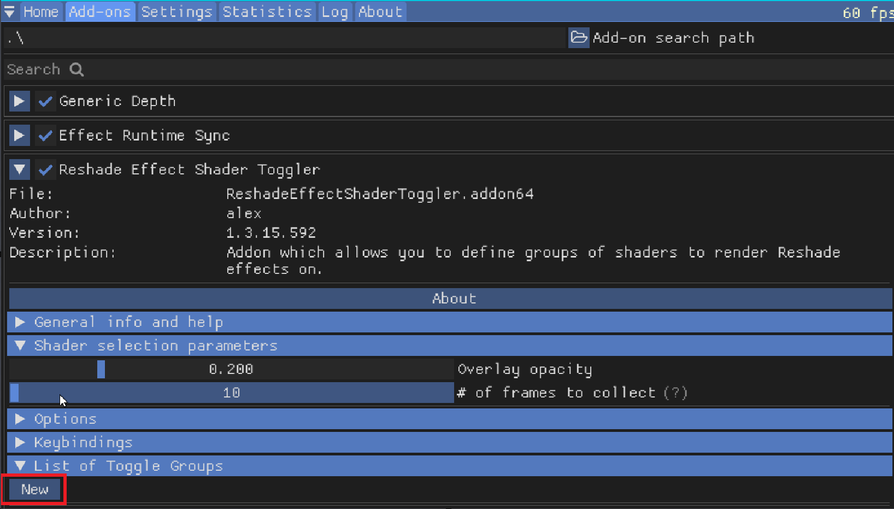
It should open up like this:
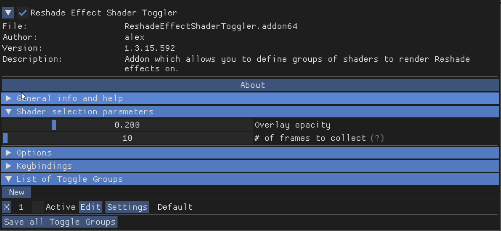
You can now click 1. Activate [x] and then click 2. Edit.
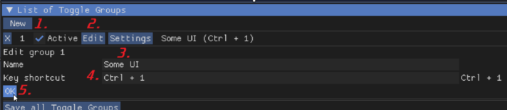
Go ahead any type something in to the 3. Name under the edit group.
Then you should make a 4. Shortcut. Once that is done click 5. OK.
The order should be:
- Activate
- Edit
- Name
- Shortcut
- OK
Now lets move on to searching for the UI. This is where it get a little more strange since now a new Window opens once you press Settings.
Go ahead any type something in to the 3. Name under the edit group.
Then you should make a 4. Shortcut. Once that is done click 5. OK.
The order should be:
- Activate
- Edit
- Name
- Shortcut
- OK
Now lets move on to searching for the UI. This is where it get a little more strange since now a new Window opens once you press Settings:

"Hold Up There. I want to get SuperDepth3D working with this aren't you not missing something?"
Oh Ya! We are missing something. @#$% Ok ya, Open up the main menu and enable the 3D Shader.
You don't need to do this if you are not using Side by Side or Top n Bottom.
Now scroll down to the bottom of the shader and enable REST_UI_MODE:

Set 0 to 1 for REST_UI_MODE.
OK, Now lets go back to to the Add-on Tab again and click. Settings.
"Ok, Now I got a other window what do I do now?"
Well now, lets orientate our selves. It should look like this:

Ok now lets zoom in and let me mark out the order:
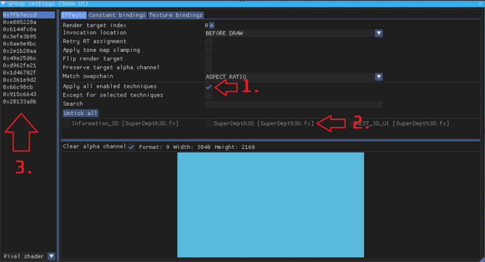
- Click off
Apply all enabled techniques [ ] -
Click and mark the 3D Shader.
[x]
It should look like that now.
Ok now lets focus on the 3rd part:

This is the list of active buffers. Now we need to pick one that Isolates UI. So lets click and find the one we are looking for.
I found the buffer that seems to work for me. See how it only really the game and not the Weapon hand or UI in this game.
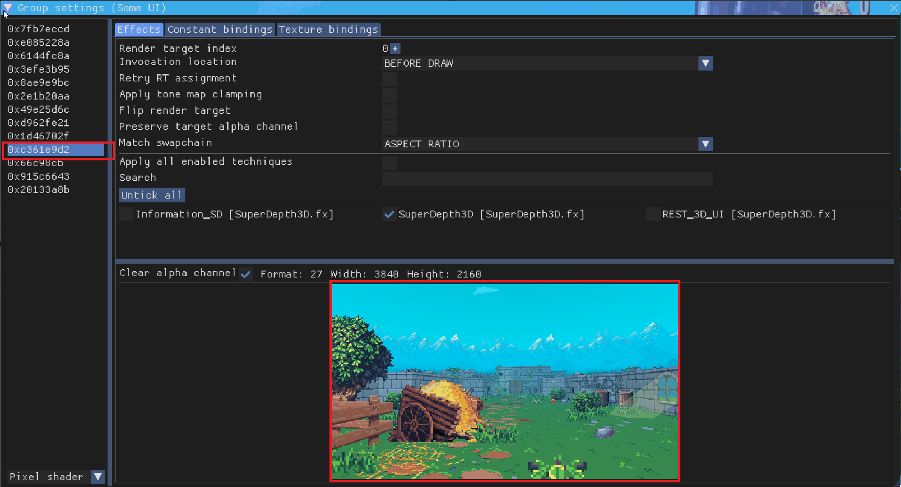
This is the correct one currently. So lets for with this by double clicking the hex value:

See how it shows up as yellow.
Now we can close the window.
"Ok, I got to where you isolated that thingy. So do I click "Save all Toggle Groups?"
Yes you do click Save all Toggle Groups:
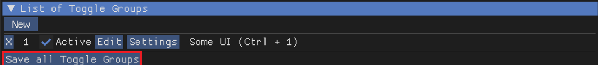
Close ReShade and look around!
You will notice a issue. In this 3D image. Can you tell me what it is?
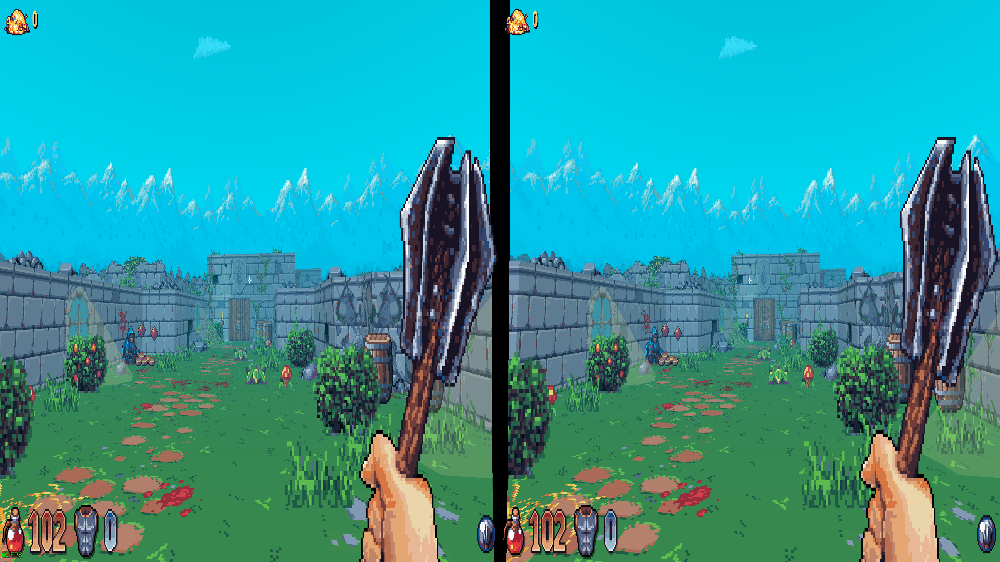
I think I see it! Is it the center crosshair?
Yes, the issue is the center crosshair. There are three ways to deal with it.
The first way is to just check if the game allows you to remove it.
So lets looks in the game settings.
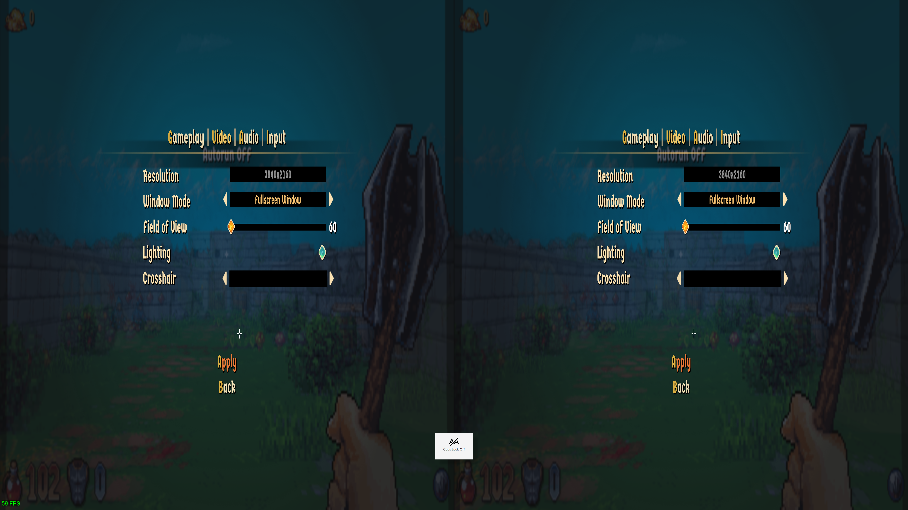
Yep found it.
Under Video, set it to nothing.
Other Ways
The other two ways is to use the ShaderToggler.
That, or modding the game to remove that texture. The last method is the hardest.
"Umm I have a problem and it only seems to happen in Side by Side and Top n Bottom. But, my cursor to click on things and aiming are all over the place can I you fix it?"
Yes you are correct. There is a work around for this issue that plagues SbS and TnB formats.
I need you to go back to the Shader Settings and look for Cursor Adjustments.
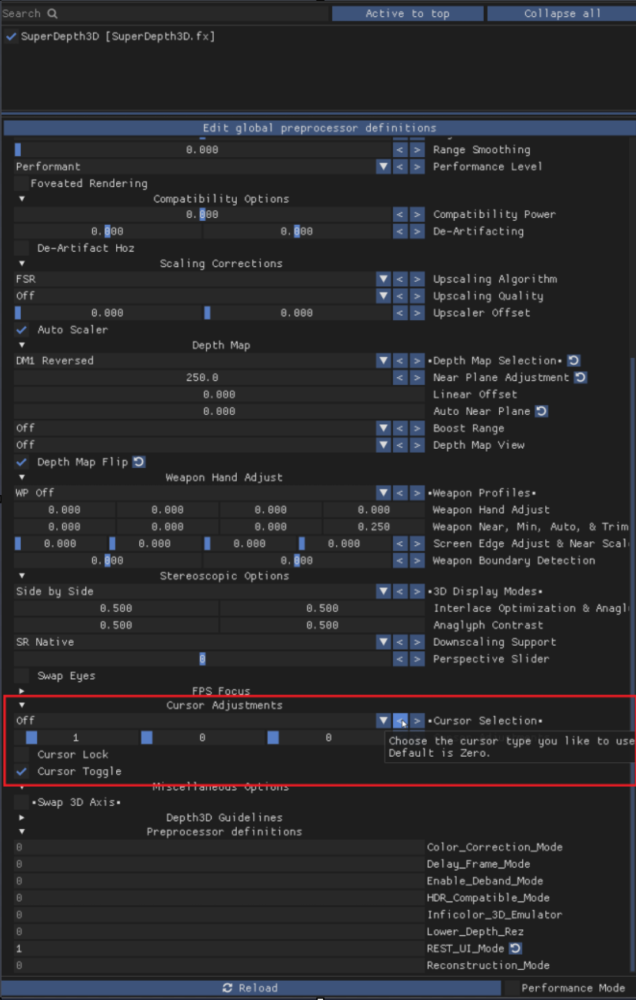
Cursor type is set to Off You should set it to the one you like for your game:

For this case I selected
Reticle.
You can use Mouse 5 to switch layers. So when you click it, it can go to the main menu or back to the game.
You will notice once you close ReShade it will move all around the screen. To fix this, hit escape and/or go to a in game menu. Then, it should work as it should.
"This look fine. But, the map is kind of broken on the edges. Can I fix that?"
Yes, you can. But, I will leave this up to you:
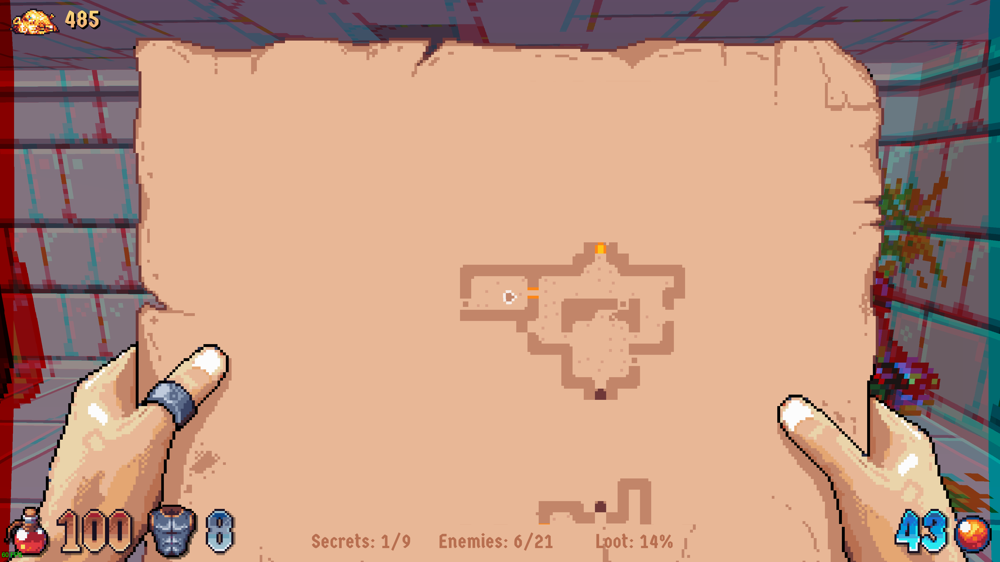
It's not really Needed. But, doing it makes it look nice.
"This worked for this game. But, what if I want to share this with other people?"
You know when you clicked, Save all Toggle Groups.
Well that generates a file in the same folder where the add-on is.
It will be called ReshadeEffectShaderToggler.ini
To share it you can post it this forum.